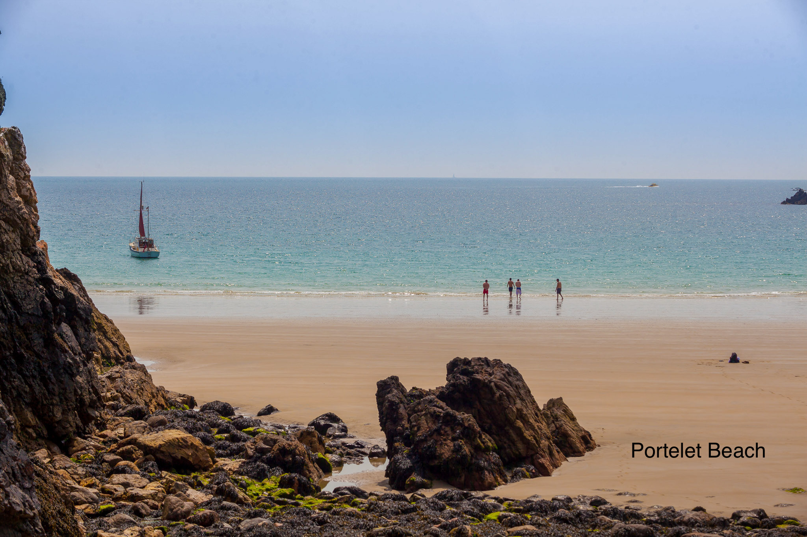

Guernsey
Hidden Gems
Top 3 beaches in Guernsey
-
L'Ancresse Bay
This large bay is located in the northern parts of the island.
This beach is ideal for swimming, surfing and kayaking.
A short walk from Lancresse bay is fort Doyle. Here you can enjoy the beautiful view efter a day at the beach. -
Portelet Beach
If you insted travel south west you will find this charming beach hidden beneat the cliffs.
You can take the cliff walk to the nearby fairy ring, and the views there will make the walk worth it! -
Vazon Bay
This beach is optimal for people who want to wind surf.
Located on the west coast this 1,6 km long beach is also perfect for families.
And close by, the restaurant Crabby Jacks offers something for everyone.
